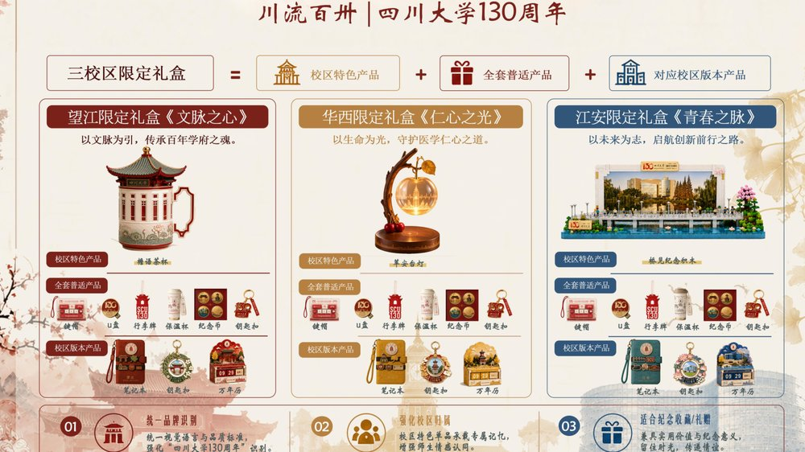
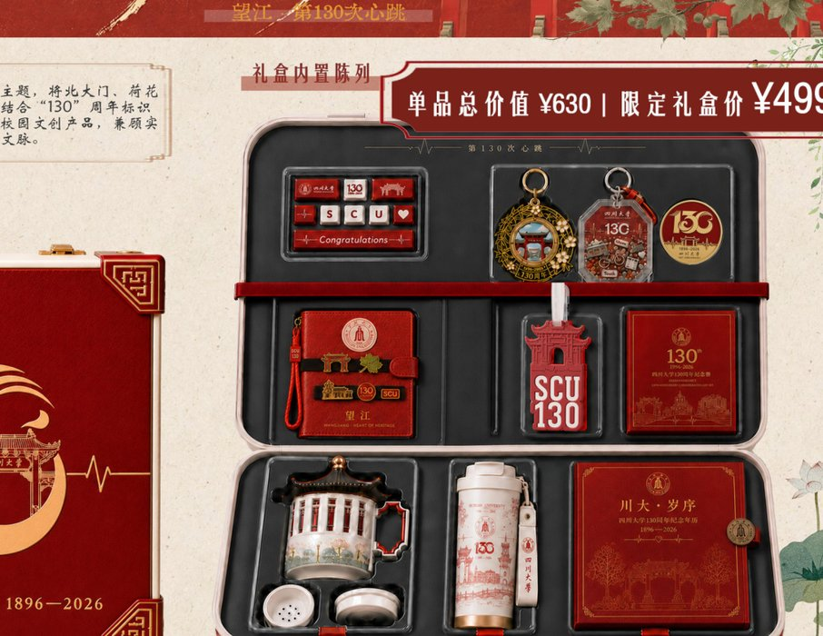

SICHUAN UNIVERSITY · 1896—2026
川流百卅
百卅川大，一份记忆随身。
以三校区文化为线索，探索一份属于你的校园记忆。欣赏设计、选择心仪产品，或让选品器帮你更快做决定。
一所川大，三种念念不忘
望江 · 朱红
望江物语
以牌坊、红墙与经典建筑意象为特色。
华西 · 暖金
华西物语
以钟楼、银杏与校园日常记忆为线索。
江安 · 黛蓝
江安物语
以现代建筑与桥梁意象传达青春活力。
把校园记忆，带进日常
01 / SCENE SELECTOR
为你挑选一份有温度的校庆礼物
1购买目的
2预算上限（元）
预算为硬约束，超预算商品不会混入主推荐。
3偏好校区
4更看重什么
完成四个问题后，这里会出现最多三套可解释的推荐方案。
02 / CULTURAL SHOP
文创商城
从随身小物到桌面收藏，找到属于你的校园记忆。
03 / CULTURAL STORY
从建筑到记忆，从记忆到文创

三校区文化构成产品设计体系：望江的历史建筑、华西的钟楼与校园记忆、江安的现代校园和桥梁。从建筑轮廓到随身小物，让熟悉的校园风景成为可携带的记忆。
04 / GIFT BOX STORIES
三校区限定礼盒 · 设计预览

概念图取自源 PDF 第49页；礼盒为设计方案，并非可交付现货。
把校园记忆组合成礼物
源设计含校区特色礼盒及通用产品组合。后续可预设允许替换的 SKU 清单与包装规则，只有核验价格和兼容性后才启用加购。
当前礼盒替换与套装结算处于 P1 数据核验阶段，不显示虚构搭配金额。
购物车
选购已确认
你已完成一次模拟购物流程。该结果仅保存在当前浏览器中，不构成真实下单、支付或配送。